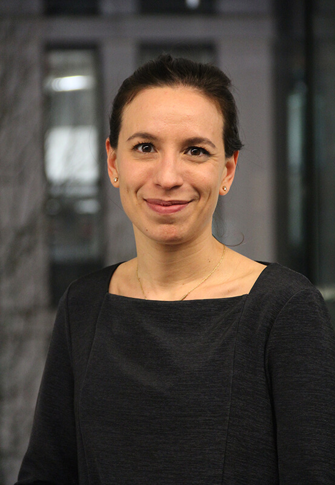

PANELS
Panel I:
New Agencies and Alignments in RTD
Design is rapidly being widened and disrupted by data technologies such as the Internet of Things, Machine Learning and Artificial Intelligence. This has a profound effect on Research through Design (RTD) too.
As technology begins to enable the things we make to make things too, and with increased autonomy, designers will need a finer understanding of the recursive relationship between the ‘people who make things,’ the ‘things that make other things,’ and the ‘things that make people’. Algorithmically enabled and connected, things can generate identity (or hamper it) by curating content, produce care (or discrimination) by performing assistance, and generate value (or not) by arranging smart contracts.
This new relationship collapses the traditional division between participation (at design time), interaction (at use time), and the (planned) creation and distribution of products and services that design has inherited from previous practices of skilful crafting and industrial design manufacturing – shifting the locus of design to uncharted territories. So how can designers participate in this expanded, emergent world of design? And with whom, or what, will they be doing their part?
For example, how can teams of diverse human experts and artificial agencies be aligned in a RTD project, doing the things that include design? Who (or what) has to participate, when and how – in what role? How can artificial perspectives be brought into the design process thoughtfully and responsibly? How to critique (not just vet) the assumptions and design decisions that get encoded in an algorithm, and the interactions the algorithm is enabled to learn from? How to develop capacity for ethical responses to be shared between distributed entities, humans and nonhumans?
Chair:
Elisa Giaccardi is Professor and Chair of Interactive Media Design at Delft University of Technology. From 2018, she also holds a visiting position as Professor of Post-Industrial Design at the Umeå Institute of Design, Sweden. She received her PhD from Plymouth University in 2003. She previously worked at CU Boulder (USA) and Universidad Carlos III Madrid (Spain). After working in metadesign, collaborative and open design processes, she has during the last years focused on the challenges that a permeating digitalisation means for the field of design. Her recent research in thing centered design engages with things in new ways, with the starting point that things now hold both perception and possible agency (e.g., AI), and thus participate in design and use in ways that previous industrially produced objects could not. She’s editor of the book “Heritage and Social Media: Understanding heritage in a participatory culture” (Routledge 2012).
Panelists:

Johan Redström is Professor in Design at Umeå Institute of Design, Umeå University (Sweden). He has previously been Rector of Umeå Institute of Design, and before that Design Director of the Interactive Institute (Sweden). He received his PhD from Göteborg University in 2001, where he also became Docent in Interaction Design in 2008. Working with research through design based on combining experimental practice with design philosophy, he has done research in areas such as emerging technologies and traditional materials (e.g. on IT+Textiles), design and sustainability (e.g. on design, energy consumption and awareness) and more recently reconceptualisations of ‘things’ in light of new digital forms of making and using. His most recent books are “Making Design Theory” (MIT Press 2017) and “Changing Things: The future of objects in a digital world” together with Heather Wiltse (Bloomsbury 2019).

Larissa Pschetz is a Lecturer in Design Informatics and Product Design at the University of Edinburgh. She completed a Microsoft-funded PhD in 2014, exploring social and political implications of particular approaches of time in design through the concept of Temporal Design. She has previously worked at research centres such as IBM Watson in Cambridge MA, Microsoft Research in Cambridge UK and Microsoft Research Asia, as well as at Interaction Design offices in Germany, such as IxDS in Berlin and HID in Hamburg. Her research focuses on Interaction Design and related areas of Human-Computer Interaction, Social Sciences and Humanities, and is currently focused on the pursuit of an inclusive Internet of Things and on the impact of smart contracting on everyday interactions.
James Pierce is an Assistant Professor of Design at California College of the Arts, a researcher at UC Berkeley Center's CITRIS and Banatao Institute, and an affiliate of the UC Berkeley Center for Long-Term Cybersecurity. His interdisciplinary research practice combine methods from design, engineering, social sciences, art, and the humanities. As a design researcher, he practices and reflects upon design as a mode of inquiry, critical engagement, and speculative exploration. His current research investigates issues of privacy, cybersecurity, trust, and fairness with emerging interactive, connected, and artificially intelligent technologies. Pierce has published over 50 peer-reviewed and edited articles, including multiple Best Paper awards and nominations, in journals and conference proceedings spanning the fields of Human-Computer Interaction, Ubiquitous Computing, and Design.

Iohanna Nicenboim is a Berlin-based interaction designer and researcher, with a background in Digital Media and Industrial Design. A recipient of the Internet of Things Awards for Design Fiction and ThingsCon Fellow, her work has been presented at several international exhibition venues and conferences, including FutureEverything, Transmediale, Milan Design Week, Dutch Design Week, CHI and DIS. As a researcher, she has focused on IoT and more recently on AI, following a Research through Design process within a more-than-human approach. As a designer, she has produced speculative scenarios and fictional artifacts, to provoke discussion on the roles of digital and connected technologies on our future lives. She will soon start a Microsoft-funded PhD at the Connected Everyday Lab, Delft University of Technology.
Panel II:
Policy and Governance for RTD
Research through Design is the designerly contribution to the creating of new knowledge. Knowledge that can be used by others. And brought about by designerly interventions such as speculating about the future, making prototypes, and engaging with complexity and ambiguity without necessarily trying to ‘box them in’.
Over the past decade design has grown into a scientific discipline, which is not only worthy as an object of study, but is also offering a unique contribution to the ways new knowledge can be produced. Research through Design (RtD) falls in that latter offer, with the core contribution of opening ‘a not-yet-existing future’ by making and [using] prototypes and other artifacts.
These new ways of doing research involve embracing complexity and ambiguity, reframing the object of study during a project, and often working with a broad set of stakeholders in different roles. This offers a number of challenges to the way research projects are organized, planned, and funded.
For example, what are the criteria by which a RtD proposal should be judged? How can practitioners (e.g., design agencies) be involved during the project, if they are not in the role of researchers, and yet provide essential value to the design actions? What forms of deliverables and dissemination should be expected? How can a project be re-arranged when a re-framing requires new parties to take part in the collaboration? How do these needs fit the current disciplinary spectrum of funding institutions?
Chair:
Pieter Jan Stappers is Professor of Design Techniques Delft University of Technology, Industrial Design Engineering. His research focuses on emancipating the role of users in the doing of design, and of designers in the doing of research. Together with Liz Sanders at MakeTools.com, USA, and Froukje Sleeswijk Visser at TU Delft he works at contextmapping techniques and participatory design. Over the past two decades he has researched, written, and taught about the roles of design skills, methods, visualisation and prototyping in the bringing about of new designs and new knowledge. Together with Elisa Giaccardi he reviewed the Research through Design (RtD) literature, and co-chairs the RtD conference 2019.
Panelists:
Janneke van Kersen is coordinator of the Social Science and Humanities research for the so called 'topsectoren' (industrial bound research) and the National Science Agenda (Societal bound research). In the context of these programming activities she focusses on research methods as ' artistic research' and 'research through design'. She was responsible for the development of the Research through Design programme together with officers from the NWO domain for technical and applied sciences. From the early '90's on she has been working in the field of creative industries either within universities, cultural institutions or the national government always advocating a strong role for digital humanities, arts and design research.
Kees Dorst is Professor of Design Innovation at the University of Technology Sydney’s Faculty of Transdisciplinary Innovation, and the founding director of the Design Innovation Research Centre and the NSW Designing Out Crime research centre. Over the course of his academic career he has co-founded four new University departments/schools and faculties. He has published many articles and several books – including ‘Understanding Design’ (2003, 2006) and ‘Design Expertise’ (2009), with Bryan Lawson. His most recent books are 'Frame Innovation - create new thinking by design' (2015) ‘Designing for the Common Good’ (2016) and ‘Notes on Design’ (2017). He is currently also a member of the Advisory Group for the UN Development Program, overseeing the creation of platforms around the world to achieve the UN Sustainable Development Goals.
Paul Hekkert is full professor of Form Theory at the faculty of Industrial Design Engineering, Delft Universtiry of Technology. Paul conducts research on the ways products impact human experience, values and behavior. In 2011 he received a personal research grant (VICI) from the Dutch Science foundation (NWO) to develop a Unified Model of Aesthetics. Paul was member of a committee of the Royal Netherlands Academy of Arts and Sciences for developing a research assessment protocol for design and engineering disciplines. He is co-founder and former chairman of the Design and Emotion society and former chairman of the executive board of CRISP, a national collaborative research initiative for and with the Dutch creative industries. He is currently member of the Dutch Creative Council and captain of science of the Top Sector Creative Industries.
Christine De Lille leads the Innovation Networks research group at The Hague University of Applied Sciences, the Netherlands in combination with her work at the faculty of Industrial Design Engineering at Delft University of Technology. Her research interests lie in design material in systems, designing organisations and role of design in research from a broad multi-disciplinary background combining both applied and fundamental research. Christine is member of the core-team of the Network for Applied Design Research, is a board member of the Design Management Network and has facilitated the NWO Research through Design projects in reflecting on their results.